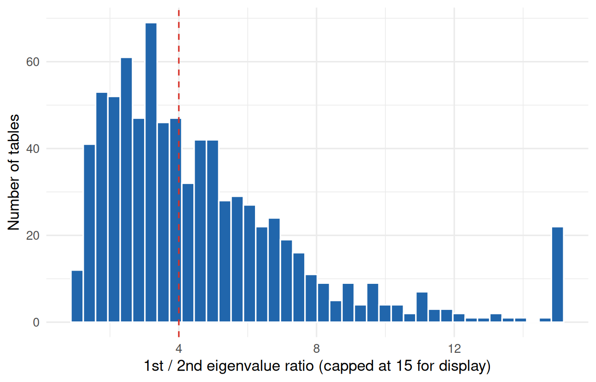
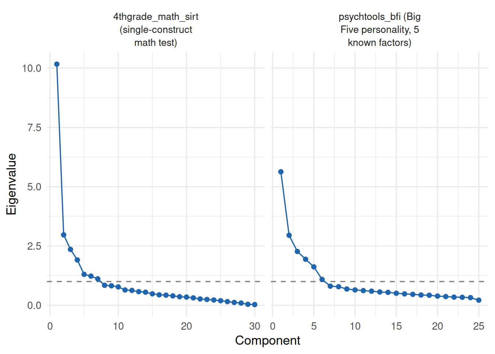

Code
all_candidates <- irw_filter(
n_items = c(5, 40),
n_participants = c(200, Inf)
)Every unidimensional IRT model used elsewhere on this site – 1PL, 2PL, the IMV comparisons – assumes item responses are explained by a single latent trait. We compute item correlation matrices for every eligible IRW table and run two classic exploratory diagnostics, the eigenvalue ratio and parallel analysis, to see how often that assumption actually holds and whether it varies by construct type.
August 10, 2026
This vignette — including the dataset search, the compute script, the analysis design, and the writing below — was produced largely by Claude (Anthropic), working from a task specification and with human review. Treat the methodological choices and interpretations accordingly, and check the compute script (dimensionality_compute.R) directly if you’re relying on the numbers here.
Every unidimensional IRT model used elsewhere on this site — the 2PL fits across cognitive datasets, the IMV comparisons, the Dutch Identity — rests on the same starting assumption: a single latent trait explains the pattern of item correlations. That assumption is a convenience as much as a claim about the world. Real instruments often bundle related but distinct sub-facets (a “self-regulation” battery with attention, inhibition, and working-memory items), or are built explicitly as multi-factor scales (a personality inventory with five named traits). Fitting a 1PL/2PL to multidimensional data doesn’t produce an error — it produces a single composite ability estimate that quietly averages over whatever structure was actually there. This vignette asks a simple empirical question: across real IRW instruments, how often does the data actually look one-dimensional, and does that vary by construct type?
We use two classic exploratory diagnostics, not a confirmatory test: the ratio of the first to second eigenvalue of the item correlation matrix (larger = more consistent with one dominant factor), and parallel analysis (Horn 1965) — comparing the observed eigenvalues to those expected from random data. Both flag candidates for multidimensionality; neither tells you what the extra dimensions are or whether they’re substantively meaningful. The CFA vignette shows the confirmatory next step for any table flagged here.
We cap items at 40 (and require at least 5) for compute reasons: tetrachoric and polychoric correlation matrices, and parallel analysis on top of them, both scale poorly as item count grows, and this needs to run across every eligible IRW table. 913 tables met this criterion as of July 2026. This pass analyzes all 913 of them.
For each candidate table, fit_dimensionality():
irw_fetch() + irw_long2resp()), downsampling to at most 10,000 respondents and dropping zero-variance items, mirroring the 2PL across datasets and local dependence pipelines.psych::tetrachoric()) for binary items, polychoric (psych::polychoric()) for 3-10 response categories, and a Pearson fallback (logged explicitly) for anything outside that range — mostly continuous slider items, which show up as tables with a large number of distinct response values.psych::fa.parallel(), factor extraction, no plot) against a simulated random-data baseline, recording the suggested number of factors. Wrapped in tryCatch — this can fail on small or ill-conditioned matrices, in which case the table is logged and dropped rather than crashing the batch.construct_type and item_format from IRW’s tags for the breakdown below.fit_dimensionality <- function(table_name) {
resp <- fetch_wide(table_name) # irw_fetch() + irw_long2resp(), cleaned
cormat <- if (n_categories == 2) tetrachoric(resp)$rho
else if (n_categories <= 10) polychoric(resp, max.cat = 10)$rho
else cor(resp, use = "pairwise.complete.obs")
ev <- eigen(cormat, symmetric = TRUE, only.values = TRUE)$values
pa <- fa.parallel(cormat, n.obs = nrow(resp), fa = "fa", plot = FALSE)
# ... ratio_12 <- ev[1] / ev[2]; suggested factors <- pa$nfact ...
}Of the 913 candidate tables in this pass, 810 produced usable results (the rest were dropped for too few usable items or a correlation/eigendecomposition that failed outright).
To reproduce with current IRW holdings, re-run dimensionality_compute.R and commit the updated dimensionality_data/dimensionality_results.rds.

49% of tables (396 of 810) clear the ratio > 4 heuristic in Figure 1. Parallel analysis is much stricter: only 3% of tables (28) get a suggested factor count of exactly 1. That gap between the two diagnostics is itself the most interesting finding here — see below.
construct_order <- summary_df %>%
filter(!is.na(construct_type)) %>%
group_by(construct_type) %>%
summarise(med = median(ratio_12), .groups = "drop") %>%
arrange(med) %>%
pull(construct_type)
plot_df <- summary_df %>%
filter(!is.na(construct_type)) %>%
mutate(
construct_type = factor(construct_type, levels = construct_order),
tooltip = paste0(
"Table: ", table,
"<br>Ratio: ", round(ratio_12, 2),
"<br>PA factors: ", nfact_suggested,
"<br>n_items: ", n_items,
"<br>Construct: ", construct_type
)
)
medians_df <- plot_df %>%
group_by(construct_type) %>%
summarise(med = median(ratio_12), .groups = "drop") %>%
mutate(tooltip = paste0("Median (", construct_type, "): ", round(med, 2)))
p <- ggplot(plot_df, aes(x = pmin(ratio_12, 15), y = construct_type, text = tooltip)) +
geom_jitter(height = 0.15, colour = irw_blue, alpha = 0.5, size = 1.7) +
geom_point(data = medians_df, aes(x = pmin(med, 15), y = construct_type, text = tooltip),
shape = 18, size = 4, colour = irw_red) +
labs(x = "1st / 2nd eigenvalue ratio (capped at 15 for display)", y = NULL)
ggplotly(p, tooltip = "text")summary_df %>%
filter(!is.na(construct_type)) %>%
group_by(construct_type) %>%
summarise(
n_tables = n(),
median_ratio = median(ratio_12),
prop_ratio_above_cut = mean(ratio_12 > ratio_cutoff),
median_nfact = median(nfact_suggested, na.rm = TRUE),
.groups = "drop"
) %>%
arrange(desc(median_ratio)) %>%
knitr::kable(digits = 2, col.names = c("Construct type", "N tables", "Median ratio",
"Prop. ratio > cutoff", "Median PA factors"))| Construct type | N tables | Median ratio | Prop. ratio > cutoff | Median PA factors |
|---|---|---|---|---|
| Affective/mental health | 101 | 5.12 | 0.63 | 3.0 |
| Physical health/functioning | 7 | 5.06 | 0.86 | 7.0 |
| Other | 4 | 4.50 | 0.50 | 5.5 |
| Cognitive/educational | 141 | 3.74 | 0.43 | 5.0 |
| Opinion/attitude | 176 | 3.72 | 0.46 | 4.0 |
| Behavioral | 53 | 3.48 | 0.40 | 4.0 |
| Personality | 57 | 3.26 | 0.40 | 4.0 |
| Developmental | 9 | 2.55 | 0.22 | 4.0 |
Read Figure 2 and Table 1 together: constructs built as a single narrow skill or trait tend to sit toward the high-ratio end, while constructs assembled from several named sub-facets (a multi-scale personality or psychopathology battery folded into one IRW table) tend to sit lower. Neither diagnostic is a clean binary split — there’s substantial within-type spread — but the ranking across types is informative on its own.
ranked_df <- summary_df %>%
arrange(ratio_12) %>%
mutate(
rank = row_number(),
tooltip = paste0(
"Table: ", table,
"<br>Ratio: ", round(ratio_12, 2),
"<br>PA factors: ", nfact_suggested,
"<br>n_items: ", n_items,
"<br>Construct: ", construct_type
)
)
p <- ggplot(ranked_df, aes(x = pmin(ratio_12, 15), y = rank, text = tooltip)) +
geom_point(colour = irw_blue, size = 1.6, alpha = 0.7) +
geom_vline(xintercept = ratio_cutoff, linetype = "dashed", colour = irw_red) +
labs(x = "1st / 2nd eigenvalue ratio (capped at 15 for display)", y = NULL) +
theme(axis.text.y = element_blank(), axis.ticks.y = element_blank())
ggplotly(p, tooltip = "text") |>
layout(margin = list(t = 60))scree_tables <- c("psychtools_bfi" = "psychtools_bfi (Big Five personality, 5 known factors)",
"4thgrade_math_sirt" = "4thgrade_math_sirt (single-construct math test)")
scree_df <- bind_rows(lapply(names(scree_tables), function(tbl) {
ev <- eigenvalues_list[[tbl]]
if (is.null(ev)) return(NULL)
tibble(table = scree_tables[[tbl]], component = seq_along(ev), eigenvalue = ev)
}))
if (nrow(scree_df) > 0) {
ggplot(scree_df, aes(x = component, y = eigenvalue)) +
geom_hline(yintercept = 1, linetype = "dashed", colour = irw_grey) +
geom_line(colour = irw_blue) +
geom_point(colour = irw_blue) +
facet_wrap(~table, scales = "free_x", labeller = label_wrap_gen(width = 22)) +
labs(x = "Component", y = "Eigenvalue") +
theme(strip.text = element_text(size = 10, lineheight = 1.1))
} else {
cat("Sanity-check tables not present in this run.")
}
The Big Five inventory – 5 named traits by construction – has a 1st/2nd eigenvalue ratio of 1.91 and parallel analysis suggests 6 factors: both diagnostics correctly flag it as clearly multidimensional. The math test has a ratio of 3.43, well above the personality battery’s – the diagnostic moves in the expected direction even though (see below) parallel analysis alone still suggests more than one factor for it.
The eigenvalue ratio and parallel analysis agree on direction — the math test above scores more unidimensional than the personality battery on both — but they disagree sharply on the absolute call. Parallel analysis suggests exactly one factor for only 3% of tables in this sample, including tables like the math test above that most researchers would treat as reasonably unidimensional in practice. This isn’t a bug in the pipeline: it’s a documented property of parallel analysis run on tetrachoric/polychoric correlation matrices. Garrido, Abad, and Ponsoda (2013) show in a large simulation study that PA on polychoric correlations systematically over-extracts factors relative to PA on Pearson correlations, especially with few response categories, skewed items, or smaller samples — exactly the conditions common across IRW tables. The polychoric/tetrachoric correlation estimates themselves carry sampling noise that inflates later eigenvalues, and parallel analysis’s random-data baseline doesn’t fully correct for it.
Practically: treat the eigenvalue ratio in Figure 1 as the more robust of the two signals for ranking tables against each other, and treat parallel analysis’s suggested factor count as a noisy, generally inflated upper bound rather than a literal count of a table’s dimensions. A table is worth a closer confirmatory look (with the CFA vignette) when both diagnostics point the same direction — low ratio and a PA count well above 1 — rather than off either one alone.
Exploratory, not confirmatory. Neither diagnostic tells you what the extra dimensions are, whether they’re substantively meaningful, or whether a bifactor/testlet structure (rather than several independent traits) better describes the data. The CFA vignette is the natural next step for any table flagged here.
Parallel analysis over-extracts on ordinal data, as discussed above (Garrido et al. 2013) — don’t read the suggested factor count as a literal answer to “how many dimensions does this table have.”
A single ratio collapses a lot of structure. Two tables with the same 1st/2nd eigenvalue ratio can have very different shapes underneath — one might have one dominant factor and many small residual ones, another two comparably-sized factors and nothing else. The full eigenvalue spectrum (as in the scree plots above) carries more information than the ratio alone; the ratio is used here as a single sortable number because it needs to summarize 810 tables in one figure.
Local dependence and low dimensionality aren’t the same thing. A table can show local item dependence (testlets, shared stems) without failing a global dimensionality check, and vice versa. See the local dependence vignette for the complementary residual-correlation diagnostic.
Results were computed on July 21, 2026. To regenerate: